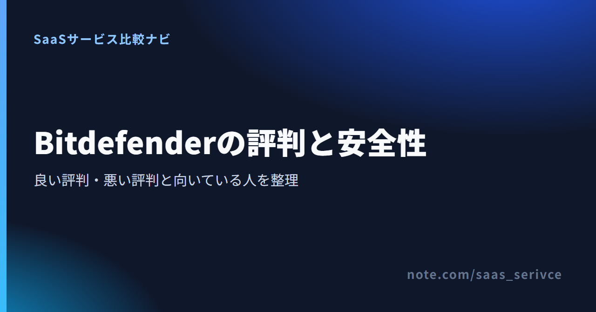
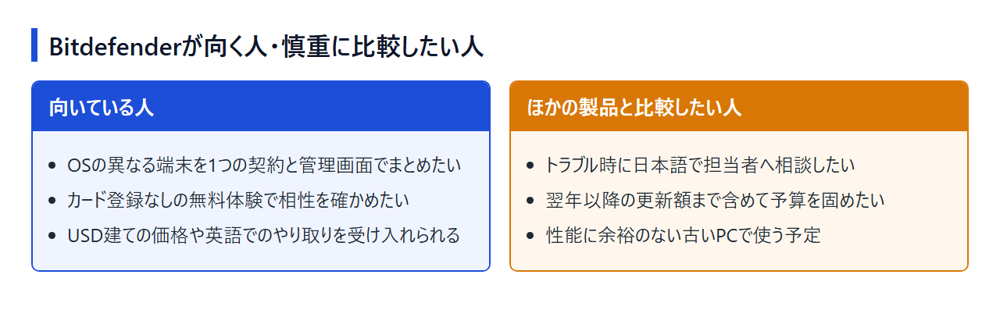

Bitdefender（ビットディフェンダー）は、検出力の高さでよく名前が挙がる海外製のセキュリティソフトです。ところが評判を調べると、「軽い」という声と「PCが重くなった」という声が並び、日本語でどこまでサポートを受けられるのかもはっきりしません。
口コミには、Windows向けの無料製品と有料のTotal Securityの話が混ざっています。ここでは公開レビューの傾向と公式情報を分けて、自分の端末に合う契約候補かを判断できるよう整理しました。編集部はBitdefenderを契約していないので、評価はすべて公開情報にもとづいています。
Bitdefenderは、防御性能を重視し、Windows・Mac・Android・iPhoneをまとめて守りたい人には有力な候補です。ただし、公式の有人サポート窓口は日本語対応をうたっておらず、更新条件や自分の端末での動作も契約前に確かめる必要があります。
主力のTotal Securityは、1つの契約でWindows、macOS、Android、iOSを保護でき、対象台数はIndividualが5台、Familyが25台です。同じ4つのOSに対応するAntivirus Plusもありますが、こちらは1台か3台で選びます。
次の条件を重視する人は、ほかの製品と並べてから決めてください。

リンク先は個人向け製品の公式ページで、製品ごとの対応OSと台数、USD建ての初年度価格が並んでいます。ここからは、公開レビューの声と公式情報を突き合わせて長所と注意点を見ていきます。
良い評判は、防御性能、危険なサイトへの対策、複数端末の管理に集まっています。 ただし、Windows向けの無料製品Antivirus Freeへの評価と、有料のTotal Securityへの評価は分けて読む必要があります。
無料版でも検出力に満足しているという投稿は、国内のフリーソフトレビューサイトで目立ちます。国内のセキュリティ専門メディアも、AV-TESTやAV-Comparativesの結果を引き合いに出して防御率の高さを評価しています。
専門メディアのレビューでは、不審なWebサイトを開く前に止める機能も長所に挙がっています。ただ、こうした声は無料版と有料版の両方にまたがります。客観的な裏付けは、後述する第三者試験の結果で確かめられます。
家族の端末をまとめて守れる点や、導入の手軽さを評価する声もあり、公式情報とも一致します。
標準のVPNも含まれますが、1台あたり1日200MBまでです。動画視聴などを常にVPN経由で行う使い方には足りません。
お金をかける前に試せる点も評価されています。Windows専用のAntivirus Freeは利用期限なしで使え、Total Securityの30日間体験はカード登録なしで始められます。体験期間が終わると失効するので、気づかないうちに有料契約へ移ることはありません。
不満として挙がるのは、動作の重さ、通知や広告、誤検知、他のセキュリティソフトとの相性、サポート対応の5点です。 動作の重さについては評価が割れているので、端末や製品の違いを踏まえて読んでください。
同じレビューサイトの中でも、「ほかのソフトより軽い」という声と「メモリ消費が大きく重い」という声が並んでいます。導入直後のフルスキャンに時間がかかった、という投稿も見られます。
重いという投稿には初回スキャン中の話やメモリ消費の話が多く、端末の性能や製品の世代の違いも影響していると考えられます。初回スキャン後の普段の動作で判断し、古いPCなら体験版で作業が遅くならないかを見ておきましょう。
動作以外の不満は、次の4つに分けられます。
競合は常駐型のセキュリティソフトを2本同時に動かすと起こりがちなので、乗り換えるときは既存のソフトを削除してから入れるのが基本です。仕事で使うソフトがある人は、誤検知を除外設定で解消できるかも体験版で確かめてください。
上位に出てくるレビューには、数年前の無料版や、画面構成が今と違う時期の投稿も含まれます。円価格を載せた古い記事もあり、現在の条件とは一致しません。
製品名にも注意が必要です。現行の米国公式には、Antivirus Plus、Total Security、Premium Security、Ultimate Securityなどが並んでいます。古い記事には、いまの個人向けラインナップに見当たらないInternet Securityなどの名前も出てきます。投稿の時期と対象製品を確かめてから読んでください。
口コミで気になった点は、無料版や30日間の体験版で自分の端末に入れて確かめられます。
安全性は「評判が良いから安全」とまとめず、第三者試験、製品が必要とする権限と保護範囲、契約とアカウントの管理の3つに分けて判断します。
Bitdefenderは公式の製品ページで、過去10年分の独立系試験のスコアを防御性能の根拠に挙げています。国内外のレビューで名前が出るAV-TESTやAV-Comparativesも、こうした独立系の評価機関です。ただし結果は回ごとに更新されるため、古い記事に載った点数や順位はあてにせず、評価機関のサイトで最新の結果を確かめてください。
Total SecurityやAntivirus Plusは、ファイルの監視に加えてVPNで通信も経由させるため、端末の深い部分への権限を求めます。保護のために必要な権限なので、範囲が広いというだけで危険とはいえません。
注意したいのは、製品ごとに守れる範囲が違うことです。Antivirus FreeはWindowsの基本保護に限られ、Mac・スマートフォン・VPNまで含めるならAntivirus PlusやTotal Securityなどの有料製品が対象です。偽のインストーラーを避けるため、ダウンロードは公式サイトから行ってください。
海外のレビューサイトには更新時の請求に関する不満も見られますが、これは防御性能ではなく契約管理の問題です。有料版の契約と更新はBitdefender Centralで管理するので、購入後に自動更新の状態と次の更新日を確かめておけば、予期しない請求を防げます。
Bitdefender Central、Android版とiOS版のMobile Security、iOS版のBitdefender VPNは日本語に対応しています。ただし、日本語対応を確認できるのはこれらに限られ、公式の有人サポート窓口にも日本語対応の記載はありません。
契約と端末を管理するBitdefender Centralは、言語一覧でJapaneseを選ぶと画面全体が日本語に切り替わります。スマートフォンでは、Android版Mobile Securityが公式FAQでJapanese対応とされています。iOS版Mobile SecurityとiOS版VPNも、日本向けApp Storeの言語欄に日本語が記載されています。
Windows製品は、表示言語を変える手順こそ現行ヘルプにありますが、Japaneseを選べるかは明記されていません。日本語版ユーザーガイドも2021年版で、現行版の画面と同じとは限りません。Mac版とiOS以外のVPNについては、公式に日本語対応の記載がありません。Windowsの日本語画面が必須なら、体験版で言語一覧を開いて確かめてください。
Bitdefenderには公式のサポート窓口と24時間対応のチャットがありますが、日本語対応の明記はありません。画面やマニュアルが日本語でも、担当者とのやり取りは英語になる可能性があります。更新や返金の相談を日本語で済ませたい人は、この点を契約前に比べておいてください。
恒久無料のAntivirus Freeと、Total Securityの30日間無料体験は別物です。有料契約では、初年度価格に加えて更新時の価格、自動更新の止め方、返金条件まで確認しておきます。
無料で使う方法と有料版の違いは、次のとおりです。
Total Securityと同じ内容をずっと無料で使えるプランは、公式のラインナップに見当たりません。
米国公式の初年度価格は、Total Security Individual（5台）が年額$59.99です。1ドル=158円換算（執筆時点の目安。為替で変動）で約9,500円になります。3台以内で足りるなら、Antivirus Plus（3台）の初年度$39.99も候補です。いずれも税別で、2年目以降の更新価格は初年度より高くなる場合があります。
支払いはカードとPayPalに対応し、カード決済では3D Secure 2.0の認証を求められることがあります。公式ヘルプは、日本発行のカードやJCBの可否には触れていません。
購入するたびに、請求書または支払領収書が請求先のメールアドレスへ届きます。PDFが必要なら、Bitdefender Centralか、決済代行の2Checkout（Verifone）の注文画面からダウンロードできます。事業用として経費にする場合の消費税の扱いは、税理士に確認してください。
製品ごとの対象台数と初年度価格を並べて見られるので、守りたい端末の数に合う製品を選んでから申し込みへ進めます。
自動更新は、Bitdefender Centralの「My Subscriptions」から「My Payments」または「Subscriptions」へ進むと停止できます。停止しても、支払い済みの期間が終わるまでは使い続けられます。
初回購入または自動更新から30日以内なら、返金を申請できます。購入後30日以内は、即時に解約して返金を受ける選択肢もあります。次回の更新だけを止める操作とは別の手続きです。
複数OS・複数台をまとめて守り、USD建ての価格と日本語対応をうたっていない窓口を受け入れられるなら、Bitdefenderは候補に残ります。日本語の有人サポートや円建ての国内購入を優先するなら、ESETやNortonも比べてください。
従業員の端末までまとめて管理したい場合は、個人向けとは別の法人向け製品を検討してください。
利用するOSと台数に合う製品は、リンク先の一覧で確認できます。
日本語の担当者に相談したい人、円建てで国内向けストアから買いたい人は、次の2製品も並べてみてください。
ESETは、ESET HOMEとWindows・macOS・Android向け製品を日本語で提供し、キヤノンITソリューションズの日本語サポート窓口があります。価格は円建てで、Essentialなら1台1年¥4,950（税込）から、月額版も選べます。30日間の無料体験は1回限りで、VPNは対象外です。
日本語の公式サイトで、プランごとの対象台数と体験版の申し込み方法を確認できます。
Nortonは、日本語版のNorton 360アプリと製品マニュアルがあり、日本語の公式サポートサイトからチャットや電話へ進めます。体験版は支払い方法の登録が必要で、終了後に有料ライセンスへ自動更新される場合があります。
日本の公式ストアでは、初年度価格と更新価格が分けて示されています。たとえばNorton 360 Standard（2台）は初年度¥5,480（税込）で、翌年以降の更新価格は¥8,980です。
Bitdefenderの防御性能は、独立系の第三者試験の結果を根拠に高く評価されています。それでも評判だけで決めるのは早計で、次の4つを確かめてから選んでください。
Windows 1台ならAntivirus Free、Macやスマートフォンまで試すならカード登録不要のTotal Security 30日間体験から始め、合わなければそのまま終えられます。
無料版と体験版のどちらが自分の端末に合うかを確かめてから進んでください。